Condenser HVAC: Service and Repair
1. Recover the refrigerant from the A/C system with an R-134a refrigerant Recover/Recycling/Charging System.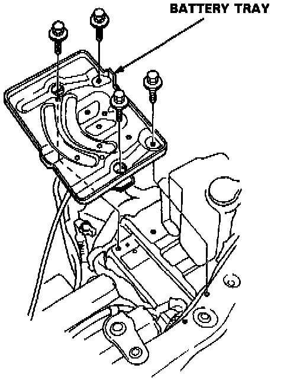
2. Remove the battery and battery tray.
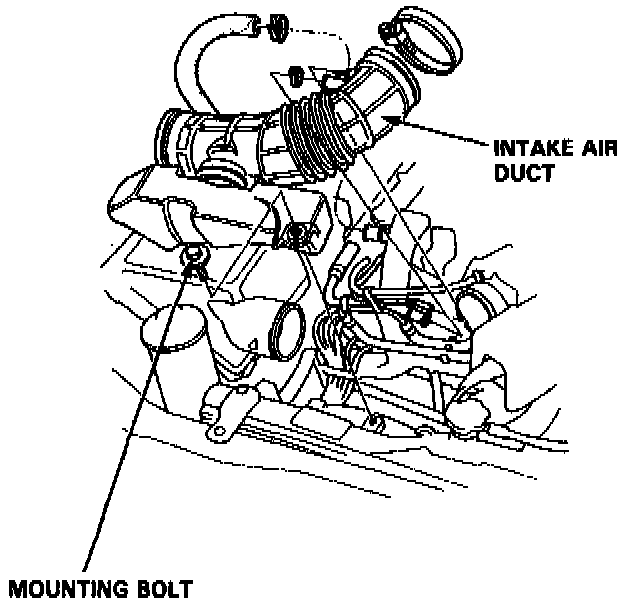
3. Remove the intake air duct.
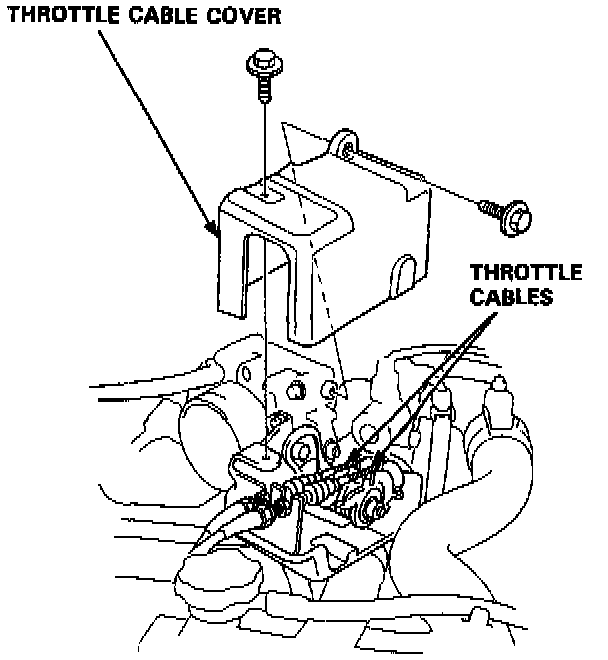
4. Remove the throttle cable cover.
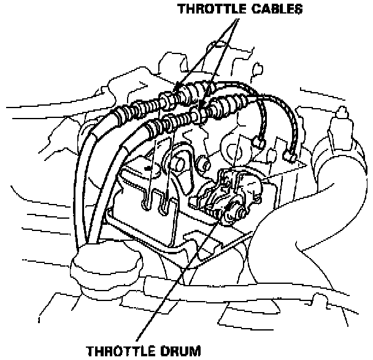
5. Loosen the throttle cable locknuts and remove the throttle cables from the cable holder.
Then disconnect the throttle cables from the throttle drum.
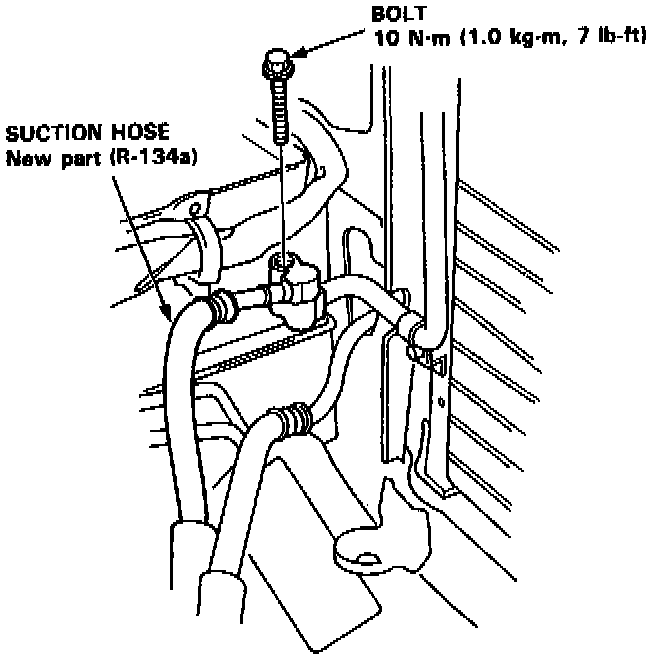
6. Remove the bolt from the suction hose fitting.
NOTE: Plug or cap the lines immediately after disconnecting, to avoid moisture and dust contamination into the system.
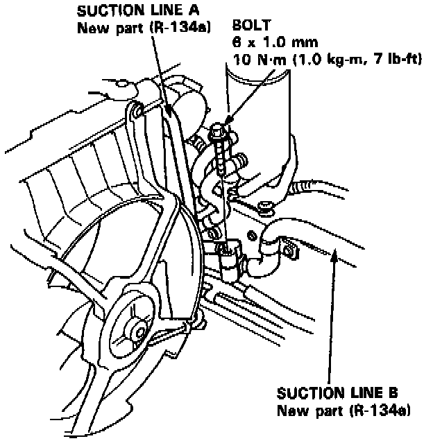
7. Remove the bolt holding suction line A and suction line B together.
NOTE: Plug or cap the lines immediately after disconnecting, to avoid moisture and dust contamination into the system.
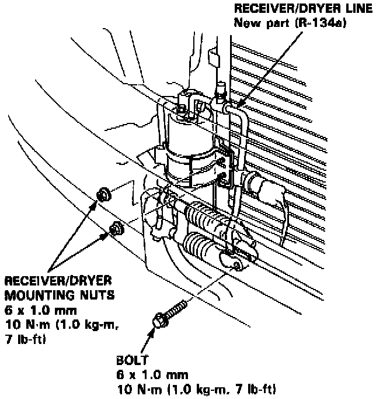
8. Remove the receiver/dryer mounting nuts. Remove the receiver/dryer pipe line bolt.
NOTE: Plug or cap the lines immediately after disconnecting, to avoid moisture and dust contamination into the system.
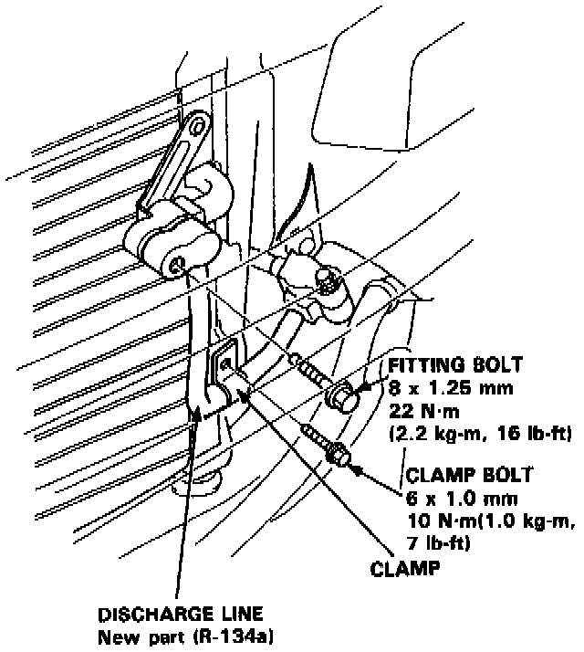
9. Remove the discharge line fitting bolt and clamp bolt.
NOTE: Plug or cap the lines immediately after disconnecting, to avoid moisture and dust contamination into the system.
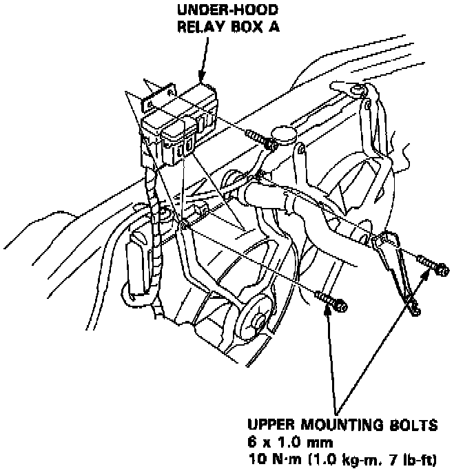
10. Remove the under-hood relay box A and upper mounting bolts as shown.
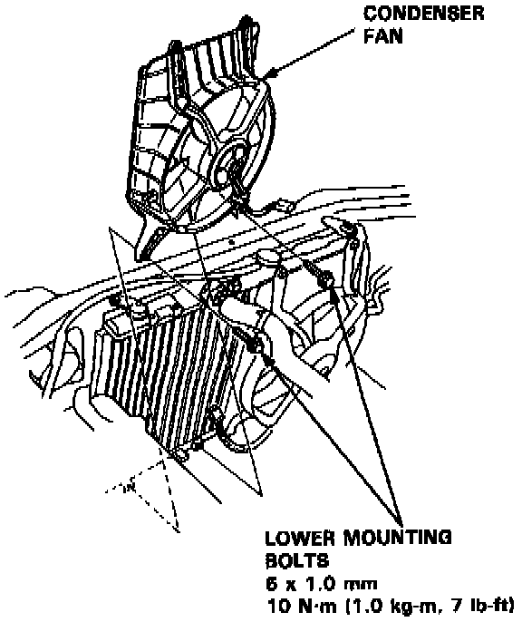
11. Disconnect the condenser fan connector, then remove the lower mounting bolts and the condenser fan.
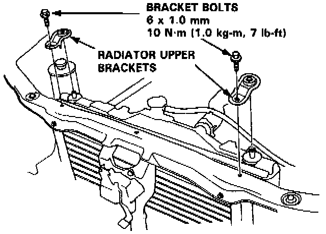
12. Remove the radiator upper brackets as shown.
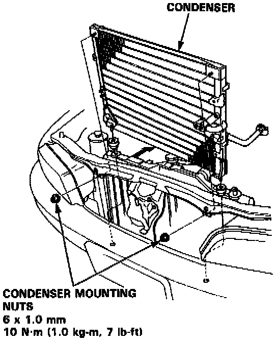
13. Remove the condenser mounting nuts, then lift out the condenser as shown.
14. Install the condenser in reverse order of removal, and:
- If you're installing a new condenser, add refrigerant oil (ND-OIL 8: P/N 38899-PR7-A01).
- Replace 0-rings with new ones at each fitting, and apply a thin coat of refrigerant oil before installing them.
NOTE: Be sure to use the right 0-rings for R-134a to avoid leakage.
- Adjust the throttle cables.
- Charge the system and test its performance.